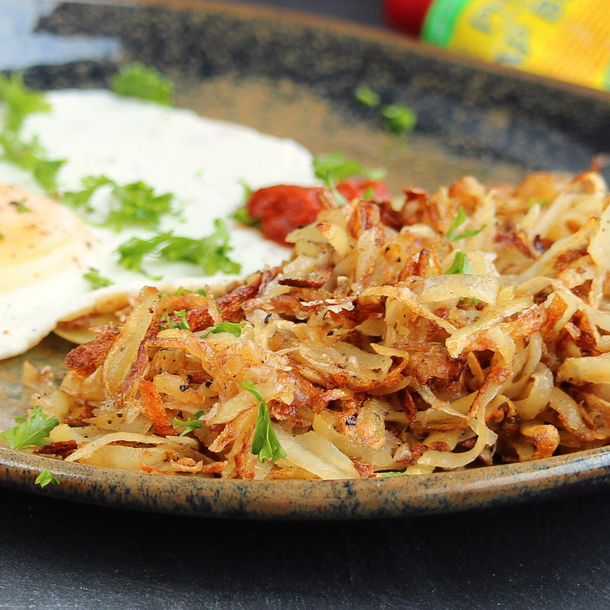

Classic Hash Browns
These classic diner-style hash browns are crispy on the outside and fluffy on the inside.

Cook: 10 mins
Total: 20 mins
Prep: 10 mins
Servings: 2
Yield: 2 servings
Ingredients
- 2 russet potatoes, peeled
- 3 tablespoons clarified butter
- salt and ground black pepper to taste
- 1 pinch cayenne pepper, or to taste
- 1 pinch paprika, or to taste
Directions
- Shred potatoes into a large bowl filled with cold water. Stir until water is cloudy, drain, and cover potatoes again with fresh cold water. Stir again to dissolve excess starch. Drain potatoes well, pat dry with paper towels, and squeeze out any excess moisture.
- Heat clarified butter in a large non-stick pan over medium heat. Sprinkle shredded potatoes into the hot butter and season with salt, black pepper, cayenne pepper, and paprika.
- Cook potatoes until a brown crust forms on the bottom, about 5 minutes. Continue to cook and stir until potatoes are browned all over, about 5 more minutes.
Nutrition Facts
Per Serving: 334 calories; protein 4.4g; carbohydrates 37.5g; fat 19.4g; cholesterol 49.2mg; sodium 13.4mg.
Main page |
Next recipe